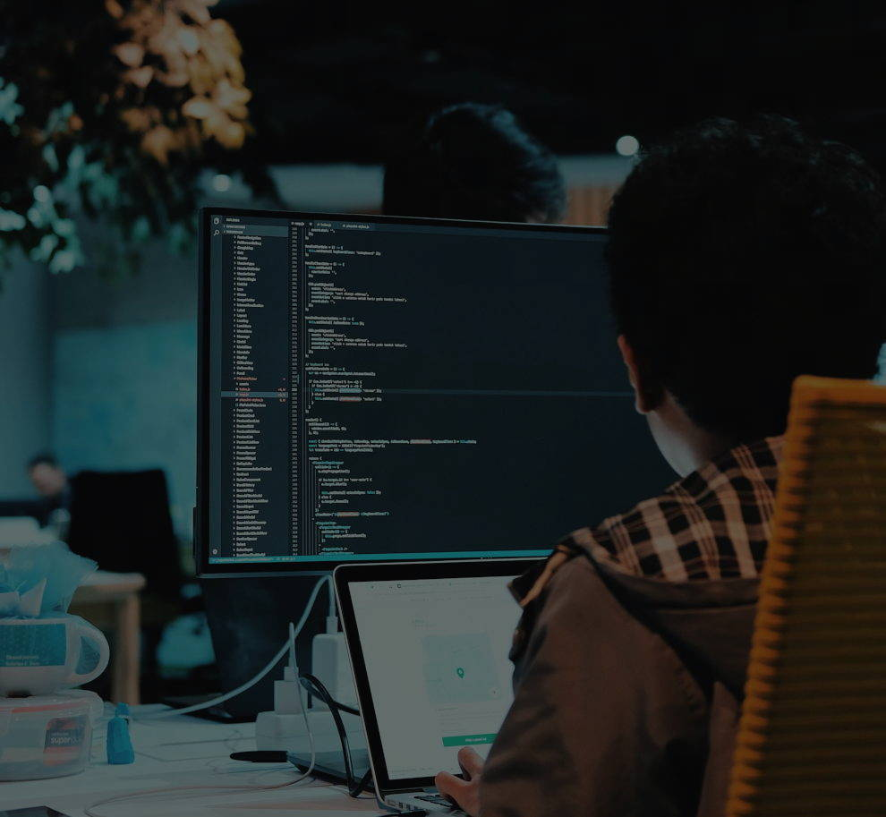
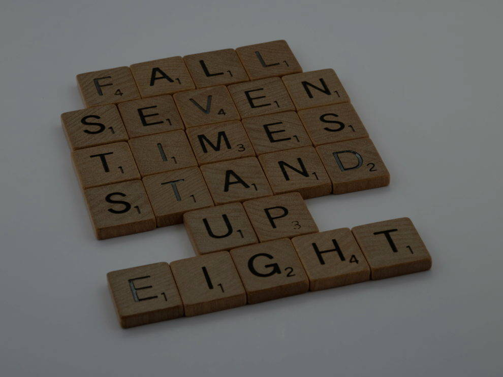
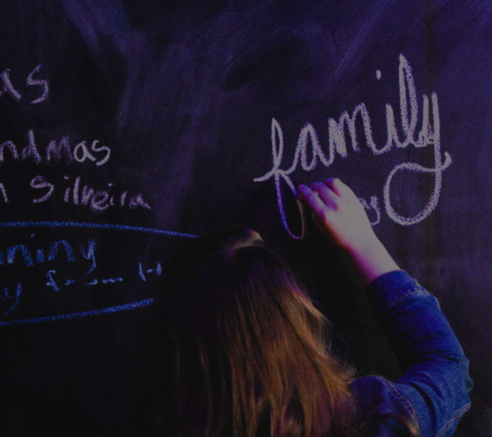

É um desejo meu popularizar a programação entre os jovens
de baixa renda. Uma vez que, eu também sou um e sei das
dificuldades enfrentadas todos os dias. Com o devido investimento
é possivel trazer esses jovens para essa área.

Eu poderia citar diversos desafios pelos quais eu passei e que
foram moldando a pessoa que eu me tornei. Porém, vou falar do
mais recente que foi a pandemia de covid-19. Esse momento de medo e incertezas
me afetou mas graças a minha resiliência pude superar este momento difícil.

A minha mãe e meu irmão mais velho são minhas maiores inspirações. Pois, sozinhos
os dois seguraram a barra por muito tempo e mantiveram a nossa familia apesar das dificuldades
no caminho.